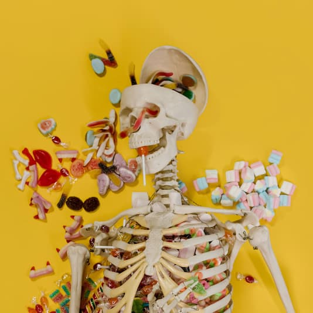

All about Cannabis Lollipops
What are Cannabis Lollipops
Lollipops have been around for a long time and are a popular type of candy made from sugar, skewered on a stick. They can come in variety of shapes, colours and flavours depending on its ingredients. In addition to different flavours, recently it has become popular to add medically active ingredients such as cannabis into lollipops for people to enjoy. Unlike smoking, where the active ingredients travel into the bloodstream through the lungs, with a cannabis infused lollipop the active ingredients are absorbed orally across the mucous membrane.
About the Active ingredients
When we talk about cannabis products the two main active ingredients of interest are Delta-g-tetrahydrocannabinol (THC) and Cannabidiol (CBD). THC and CBD are both lipids and are lipophilic and initially they were thought to interact with the cell membrane lipids. However, after more research it has been found that THC works by binding to the cannabinoid receptor CB1 in the central nervous system (mainly the brain) and, CB2 in the immune system. The activation of CB1 and CB2 receptors is what causes the sensation of euphoria and being high. CBD on the other hand has negligible affinity to these receptors, which is why only using CBD does not get you high. CBD works in a more indirect way by blocking and enhancing other receptors. One of its effects is that it makes some receptors more receptive to serotonin, which leads to enhancement in a person's mood and relaxation.

Effects of cannabis
Cannabis products with THC is primarily used for recreational purposes due to the psychological effects it provides, whereas CBD is primarily used for its medicinal benefits. Some common effects of THC an CBD are listed below:
testing.
CBD effects:
- decreased anxiety
- increased focus
- decrease pain
- decrease inflammation
THC effects:
- increased heart rate
- dilation of blood vessels
- dry mouth
- hunger
- change in conscious perception
- reduces anxiety in lower doses
- can aggravate anxiety with higher doses
Legality
In Canada, according to the Cannabis Act passed in October 2018, cannabis products are legal for medical and recreational use for people aged 18 and older. It also details that an individual may possess no more than 30 grams of cannabis (dried, or its equivalent non-dried form) at any time. Furthermore, individuals are allowed to carry up to 30 grams while travelling within the country. However, it is strictly prohibited to carry this drug outside the country internationally.
In USA, cannabis products that have less than 0.3% THC are legal according to the US federal laws. However, each state also has their own regulations regarding the substance. In some states it is completely legal to use marijuana for both recreational and medical use, whereas in some states it is only legal for medical use. The amount of cannabis and THC allowed per person also varies wildly across states.